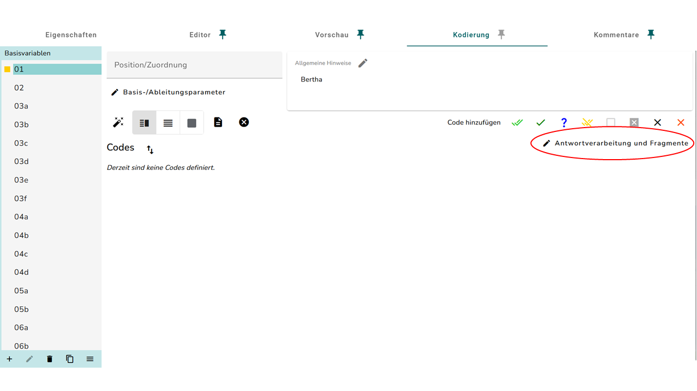
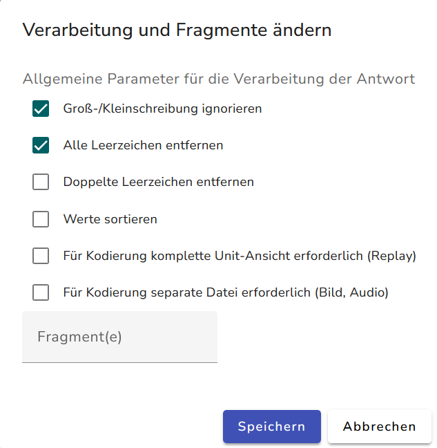

Kodierung Basis-Fälle
Die Anleitungen auf dieser Seite betreffen Kodierfälle, die ohne viel Erfahrung oder Schulung definiert werden können.
Allgemeines
- Kodierungsregeln hinzufügen
- Hier muss auf das Plus-Symbol unter “Regeln für automatisches Kodieren” geklickt werden. Dann kann man auswählen, welche Regel man für die Aufgabe benötigt.
{kind=link}
- Regelsätze hinzufügen
- Man fügt einen Regelsatz hinzu, indem man auf das Plus-Symbool direkt unter dem Feld “Bewertung” klickt.
{kind=link}
- Kodierung prüfen
- Um sicher zu stellen, dass die Kodierung, die man angelegt hat auch funktioniert, kann man die Kodierung im Reiter Vorschau prüfen. Dazu gibt man die richtige Antwort in das zu prüfende Item ein, und klickt unten auf “Kodierung prüfen”.

Dann sollte bei der ID des zu prüfenden Item unter Bewertung eine “1” stehen. Zur weiteren Prüfung kann auch noch eine falsche Antwort eingegeben werden und auf “Kodierung prüfen” geklickt werden. Dann sollte unter Bewertung eine “0” stehen.
{kind=link}
MC
Beim Kodieren von MC Items muss, nachdem das Zauberstab-Symbol angeklickt wurde, nur noch die richtige Antwortoption ausgewählt werden.
Kurzantwort
Falls die Lösung des Items eindeutig ist und es nur eine mögliche Schreibweise für die richtige Antwort gibt, dann wählt man im Kodierungsfenster erstmal die Option „Soll der Wert als Zahl interpretiert werden?“ aus. Danach gibt man für numerische Antworten im Feld „Numerisch: Übereinstimmung“, bzw. für Textantworten im Feld „Zeichen/Text: Übereinstimmung“ den richtigen Wert ein.
Bei mehreren richtigen Antworten:
- Auf das Stift-Symbol klicken und Leerzeichen entfernen anklicken. Falls Groß- und Kleinschreibung nicht wichtig ist: „Groß-/Kleinschreibung ignorieren“ anklicken.
 
- Mögliche Antworten in das entsprechende Übereinstimmungsfeld untereinander auflisten. Hier ist es wichtig, die Richtlinien der Fachdidaktik zu beachten.
- Wenn man sich zu 100% sicher ist, dass es keine weiteren richtigen Antworten gibt, außer die, die man aufgelistet hat, dass es sich also um eine geschlossene Kodierung handelt, kann man unter Methode für Abschluss auf “Alle Anderen - Automatisch” klicken. Alles andere nennt man offene Kodierung.
Ansonsten auf “Alle Anderen - Manuell”.
{kind=link}
{kind=link}
CMC
- Hier wird die ID des gesamten Elements nicht geändert, sondern die IDs der einzelnen Zeilen. Diese werden dann für Item 03 z. B. in
03a,03b,03c, usw. umbenannt.
{kind=link}
- Beim Generieren der Kodierung ist dann einfach für jede Basisvariable die richtige Antwortoption auszuwählen.
- Zum Schluss ist noch eine abgeleitete Variable anzulegen, die von den zugehörigen Basisvariablen gespeist wird.
Drag und Drop
Vor dem Kodieren sollte sich unbedingt ein Überblick über die Verknüpfungen von Drag-and-Drop-Elementen verschafft werden. Diese werden beim aktuellen Prozedere nämlich aufgelöst und sind wiederherzustellen.
Beim Anlegen der Kodierung bei Aufgaben mit Drag-und-Drop-Format ist die Benennung der IDs komplex.
- Die Ablagelisten stellen hier die zu kodierenden Basisvariablen. Diese werden z. B. bei Item 04 mit
04a,04b, usw. benannt. - Achtung: Hier gibt es einen Sonderfall, der von diesem Verfahren abweicht. Wenn jedes Element seperat bewertet wird, dann werden die Ablagelisten unabhängig voneinander und als seperate Items benannt. Es werden also die IDs
01,02,03, usw. vergeben. Diese werden dann auch nicht zu einer ID abgeleitet. - Falls die Drag-Elemente alle in einer Liste sind, wird diese z. B.
_04abenannt. Diese ID wird im Reiter Kodierung als Basis-Variable auftauchen, wird aber nicht relevant für die tatsächliche Kodierung sein. - Falls die Drag-Elemente jeweils in einer einzelnen Liste stehen, werden diese z.B.
_04a,_04b, usw. benannt. - Jetzt müssen aber noch die IDs der einzelnen Drag-Elemente unbenannt werden. Dies macht man wieder bei den Antwortoptionen in der linken Leiste. Sie bekommen z.B. die IDs
04_1,04_2, usw.
- Die Ablagelisten stellen hier die zu kodierenden Basisvariablen. Diese werden z. B. bei Item 04 mit
Bei der Umbenennung der IDs wird leider nicht die Verknüpfung der Drag- und Drop-Elemente erhalten. Dies muss man dann nochmal hergestellt werden.
Die Kodierung selber ist dann auch nochmal etwas anders. Wenn man in einer Basisvariable auf das Zauberstab-Symbol klickt, muss man die entsprechende Zielablage auswählen, die wir z. B.
04_1usw. benannt haben.Zum Schluss ist bei Bedarf noch eine abgeleitete Variable anzulegen, die von den zugehörigen Basisvariablen gespeist wird.
{kind=link}
Umordnen
Die Kodierung des Formates Umordnen wird fast identisch zu der des Drag und Drop-Formates angelegt. Der einzige Unterschied liegt bei der Generierung der Kodierung mit dem Zauberstab. Hier muss der Haken bei “Ist die Reihenfolge wichtig?” gesetzt werden. Dann müssen die Optionen in die richtige Reihenfolge gezogen werden.
{kind=link}
Die Plätchen lassen sich nicht immer richtig verschieben. Man muss eventuell das Feld nochmal umsortieren, nachdem alle Plätchen hineingezogen wurden.
Begründung
- Die Kodierung von den Begründungs-Aufgaben wird sich noch ändern, das unten gelistete Verfahren ist erstmal temporär.
- Um den Richtig-Code hinzuzufügen, muss man auf den doppelten Haken klicken. Die Richtig-Anweisungen aus Allgemeine Hinweise rauskopieren und ohne Formatierung in „Instruktionen für manuelles Kodieren“ einfügen (Strg + Umschalt + v).
{kind=link}
- Bei Bedarf von Partial-Credit-Codes: Auf den einfachen Haken klicken. Die teilweise Richtig-Anweisungen aus Allgemeine Hinweise rauskopieren und ohne Formatierung in „Instruktionen für manuelles Kodieren“ einfügen.
{kind=link}
- Um den Falsch-Code hinzuzufügen, muss man auf das schwarze Kreuz klicken. Die Falsch-Anweisungen aus Allgemeine Hinweise rauskopieren und ohne Formatierung in „Instruktionen für manuelles Kodieren“ unter „Alle anderen Antworten“ einfügen.
{kind=link}
Die Formatierung von den Instruktionen für manuelles Kodieren sollte folgendermaßen sein:
- Der einleitende Satz sollte verkürzt werden.
- Falls ein „oder“ in der Anweisung steht, dieses in eine eigene Zeile verlegen und in Großbuchstaben schreiben.
- Die Beispiele als Bulletpoints unter einem fettgedruckten „Beispiele:“.
Oft kommen MC-Elemente zusammen mit Begründungselementen vor. Diese könnten automatisch ausgewertet werden. In Rücksprache mit der Fachdidaktik und der kodierenden Einrichtung könnte wie folgt vorgegangen werden, wenn die Elemente (MC und Freitext) separat voneinander kodiert werden sollen:
- Am Anfang der „Instruktionen für manuelles Kodieren“ vom Richtig-Code ist die Zeile: „(Begründung für „…“:)“ einzufügen. Dabei wird anstelle von „…“ die richtige Antwortoption des MC-Elements geschrieben.
- Wenn es sich also um eine ja-nein-MC-Aufgabe mit einer Begründung handelt, wobei die richtige Antwortoption „ja“ ist, dann wird am Anfang der „Instruktionen für manuelles Kodieren“ vom Richtig-Code die Zeile: „(Begründung für „ja“:)“ eingefügt. Das soll den Kodierenden helfen, einen Kontext herzustellen.
- Dieses Vorgehen befindet sich derzeit (07/2024) in der Erprobung.
{kind=link}
Markieren
In diesem Format muss die ID vom Text, der zu markieren ist, nach dem Item benannt werden, z.B. würde die ID des Textes zu Item 12 auch 12 sein. Die Generierung der Kodierung von Markier-Items geht leider noch nicht über den Zauberstab.
- Zunächst muss im Reiter Kodierung ein “Richtig-Code” angelegt werden und auf das Plus-Symbol unter “Regeln für automatisches Kodieren” geklickt werden.
- Hier muss die Regel “Zeichen/Text: Übereinstimmung” ausgewählt werden.

- Jetzt muss im Reiter Vorschau die richtige Lösung mit dem Markier-Tool im Text markiert werden.
- Wenn man dann unten auch “Kodierung prüfen” klickt, dann wird neben der Item-ID unter Wert ein Code angezeigt.
{kind=link}
- Dieser Code muss kopiert werden, und im Reiter Kodierung in das Feld “Zeichen/Text: Übereinstimmung” eingesetzt werden.
- Wenn mehrere Bereiche markiert werden müssen, muss jeder Bereich einzeln markiert werden und deren Code in einen eigenen Regelsatz im “Richtig-Code” eingesetzt werden. In jedem Regelsatz wird dann die Regel “Zeichen/Text: Übereinstimmung” wie oben hinzugefügt.
Dieses Verfahren gilt nur, wenn alle Bereiche markiert werden müssen, damit das Item als richtig gewertet wird. Bei Bereichen, die optional markiert werden dürfen, ist die Kodierung etwas anders und wird im Abschnitt Markieren optional beschrieben.
- Zuletzt muss noch ein letzter Regelsatz angelegt werden. Dieser legt die Anzahl der zu Markierenden Bereiche fest.
- Mit dem Plus-Symbol unter “Regeln für automatisches Kodieren” muss die Regel “Numerisch: Übereinstimmung” hinzugefügt werden. Man muss jetzt auf das “A” auf der rechten Seite des Codes klicken, und “Länge” auswählen. Dann Speichern.
{kind=link}
- In das Feld “Numerisch: Übereinstimmung” muss dann die Anzahl der zu markierenden Bereiche geschrieben werden.
- Die einzelnen Regelsätze müssen mit “UND” verknüpft werden. Dafür muss neben dem Plus-Symbol “UND” ausgewählt werden.